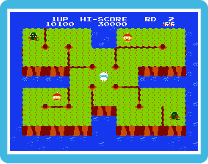

|
|

There are two basic techniques to defeat enemies. Use  to activate the harpoon, or to activate the harpoon, or  to use the drill. When you push the drill button to connect the stakes, cracks will appear in the direction you are facing; when all cracks are connected, the smaller portion of the island will fall into the sea, and all monsters on that portion of the island will be destroyed. to use the drill. When you push the drill button to connect the stakes, cracks will appear in the direction you are facing; when all cracks are connected, the smaller portion of the island will fall into the sea, and all monsters on that portion of the island will be destroyed.
 Lives Lost and Game Over Lives Lost and Game Over
If a Pooka or a Fygar touches you or a Fygar’s fiery breath hits you, you’ll lose a life.
The same will happen if you fall into the water. When you lose a life, your remaining lives
decrease by 1. If you lose a life when you have no lives remaining, the game ends, and
you’ll return to the title screen.
|
|
|
|